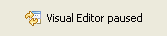
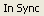
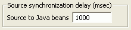

By default, the visual editor for Java continuously synchronizes
the source code and the Design view. This synchronization can be paused or
reloaded manually at any time, and the delay before synchronization occurs
can be set as a preference.
The following are key features of the synchronization process and how you
can adjust it for performance:
- Pause - Click the pause button on the main
visual editor toolbar to suspend all synchronization. While synchronization
is paused, you can only make changes to the source. This removes the overhead
of parsing source, but you cannot make any changes using the Java beans view,
Properties view, or Design view while synchronization is paused. When synchronization
is paused, the Design view is greyed out to indicate the paused
state:

- Reload - When synchronization is paused, the
reload button is displayed in the main toolbar. Click the reload button to
reparse the code, resynchronize, and revert to the default synchronization
mode.
-  - The status of the synchronization is displayed at the bottom of
the workbench.
- If the source code and the model of the Java beans are synchronized, the
status displays In Sync.
- If the synchronization is paused, the status displays Sync Paused.
- If synchronization has not yet taken place for a change, the status displays Out
of Sync until the next synchronization occurs.
- If you do a reload and the visual editor is unable to parse the code,
the status displays Parse Error.
- You can change the delay time before automatic synchronization occurs
to adjust for performance. By default, synchronization with the Design view
occurs one second after a source code change is made. You can change the delay
on the Code Generation tab of the Visual Editor preferences page.

- If the source code contains syntax errors, the toolbar button shows the
synchronization error button. The visual editor will wait until the errors are fixed before
trying to synchronize again, or you can click the button to attempt a reload.